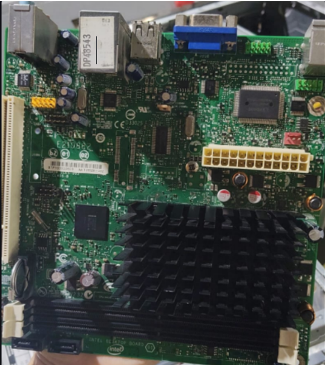
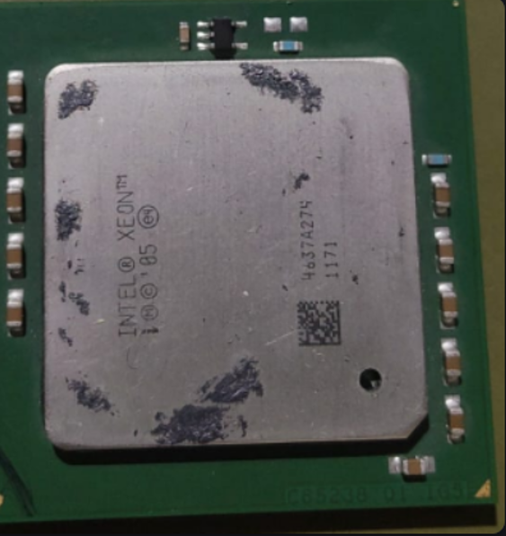
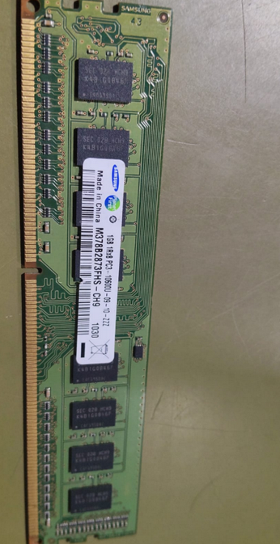
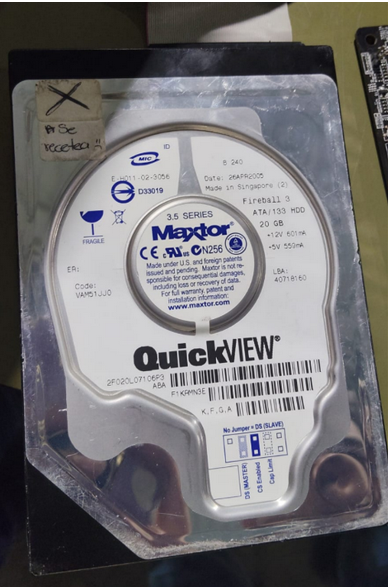
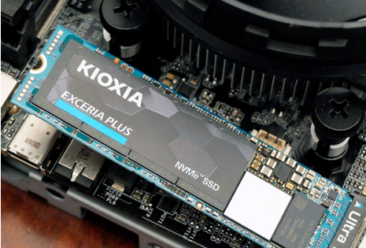

ARQUITECTURA DE COMPUTADORAS
Practica 1: Componentes Principales
Practica 1: Componentes Principales
Identificar los componentes principales.
En la primer practica observamos cada componente de la computadora en especial, la tarjeta madre, la CPU, la RAM, El Disco Duro (HDD), asi como el Disco Sólido (SSD), esto nos sirvió para identificar los componentes principales y tambien, entendimos su funcionalidad.

Es el circuito impreso principal de la computadora, actuando como la columna vertebral que interconecta y comunica todos los componentes: CPU, memoria RAM, almacenamiento, tarjeta gráfica y periféricos.

La Unidad Central de Procesamiento (CPU, por sus siglas en inglés) es el componente de hardware principal y "cerebro" de cualquier ordenador, servidor, teléfono inteligente o dispositivo inteligente. Se encarga de interpretar y ejecutar instrucciones de programas, procesar datos y coordinar el funcionamiento de los demás componentes del sistema.

La memoria RAM (Random Access Memory o Memoria de Acceso Aleatorio) es la memoria rápida y temporal de un dispositivo (ordenador, móvil) que almacena los datos de los programas en uso para que la CPU acceda a ellos al instante.

Un disco duro (HDD - Hard Disk Drive) es un almacén principal de una computadora, diseñado para guardar de forma permanente todos tus archivos (fotos, vídeos, documentos, programas) y el sistema operativo, incluso cuando el equipo está apagado.

Un SSD (Unidad de Estado Sólido) es un dispositivo de almacenamiento de datos que utiliza memoria flash para guardar información sin partes móviles, superando en velocidad, silencio y resistencia a golpes a los discos duros (HDD) tradicionales. Son fundamentales para mejorar el rendimiento, reduciendo tiempos de arranque y carga de aplicaciones.